99-06-17
99-06-17
 This page is for sharing any Nn3 photos that come my way. Send some!
This page is for sharing any Nn3 photos that come my way. Send some!

Photos from Tom Knapp
|
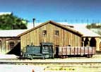 NN3-1 |
(72k) RLW D&RG #50 diesel, and MT gon. alongside my model of the Pacific Coast Railway roundhouse and shop. The cast metal and etched brass kit makes up nicely. |
|
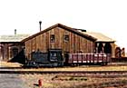 NN3-2 |
(56k) Another of the same scene - came out a bit better. |
|
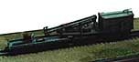 NN3-3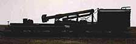 NN3-4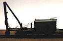 NN3-5 |
(52k, 28k, 40k) Best I could get out of dark pics. These are a RLW kit for the D&RG pile driver and tender car, shown both in a folded down traveling mode, and in an erected pile driving mode. The kit is "operational", i.e, you can fold and unfold the rig, and rotate (or swing) the pile driver deck. Also, the winch house is removable to show the winch engine, which is included. |
|
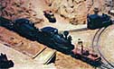 Nn3-6 |
(124k) Two RLW shays on a part of my old PCRy layout. One was built as a wood burner, with diamond stack and oil head lamp; the other was built as an oil burner with a shotgun stack, generator, and electric head lamp. The are pushing an RLW flanger. Note the wood burner has a set of antlers mounted on the headlight. In the foreground is a Tel's Novel-T (brass kit) Ford model T pick-up. In the background is an RLW D&RG#50, and a Langley (British) white metal truck. |
|
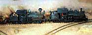 NN3-7 |
(36k) Another view of the two RLW shays. The thin, fine-grained rust patterns were produced using Rust-All, which I highly recommend. This is available at most hobby shops, and through Micro Mark. |
|
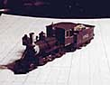 NN3-8 |
(28k) A Rocky Mountain Models mogul. These were a RTR brass conversion of a Marklin mechanism. I re-painted this one. It ran all day for a week at the NMRA National Convention in Denver Colorado in 1977(?) on an MRC momentum throttle with a 12V peak. Got warm to the touch, but did not burn up. (A few years later it picked up a bit of ballast in one of the gears and stalled, and before I noticed, the motor went up in a puff of smoke; I have since re-motored it with another Marklin motor.) |
|
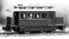 NN3-9 |
(24k) Steam dummy built by Dr. Peter Clark. Except for some added bits, the bulk of this loco was machined from a solid block of brass. It is mounted on a modified Marklin chassis. Some of these served the San Diego water front and the Pacific Coast Steamship Company wharves. (See Gerald Best's book - "Steamships and Narrow Gauge Rails.") |
|
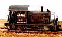 NN3-10 |
(88k) D&RG #50 (again) - this time next to an Xacto #11 knife blade, to emphasize smallness of model. |
|
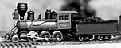 NN3-11 |
(32k) Cooke Mogul, RLW kit, owned by Dr. Peter Clark, built by John Spratley of England, painted by Tom Knapp in Russian Iron, black & mahogany (cab). |
|
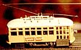 NN3-12 |
(88k) Best I could get out of a dark pic. N scale Birney trolly on CatTrak overhead. This one is mounted on Arnold 4 wheel diesel switcher mechanism. Could be mounted on modified Marklin mechanism for narrow gauge. I think RLW has a kit for this now. |


All photographs ©1999, Tom Knapp. Used with permission. All rights reserved.
web pages ©1999 blanchard design,
all rights reserved.